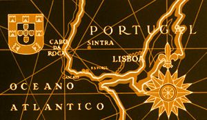

Sintra

| Castelo dos Mouros |
| Palàcio Nacional da Pena |
| Palàcio e Quinta da Regaleira |
Sintra : avec son imposante serra -le mont de la Lune- parsemée de palais, sources cristallines, églises et manoirs, qui ondule verdoyante jusqu'à l'océan, la fascination des quartiers de la vieille ville ou de celui d'Estefânia et des villages qui colorent la plaine alentour, est un lieu privilégié par excellence, d'une rare beauté et d'un intérêt culturel et naturel indéniable. En 1995, cette belle ville a vu sa notoriété s'accroître par son classement au Patrimoine Mondial de l'Unesco, dans la catégorie Paysage Culturel. Petite ville étalée, accrochée à la montagne, c'est le nez de l'Europe, à une trentaine de km de Lisbonne. Entourée de Retiros, luxueuses propriétés où l'on faisait retraite, et de Quintas, maisons à mi-chemin de la ferme et du petit palais, refuges idéaux contre la chaleur de la ville. Lieu d'inspiration pour bon nombre d'écrivains romantiques, comme Lord Byron et Paul Morand. |
|
Bienvenue ! |
|
Au cours d'un voyage touristique au Portugal, je suis tombée amoureuse de Sintra et de ses châteaux. Ville hétéroclite par excellence, Sintra associe les styles maures, gothiques et renaissances ce qui en fait un des hauts lieux de l'architecture romantique. |

|
|